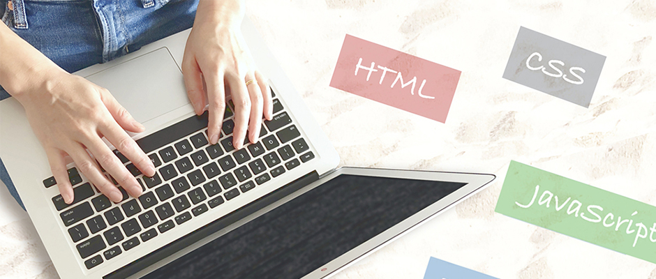

TOPページの見出し
TOPページの大見出し（h1）はサ イト名に設定するので、mainタグ内は中見出し（h2）から使い始める。
セクションとは
見出しとその内容は、sectionタグでグループ化する。小見出しがある場合、中見出し（h2）のsectionの中に小見出し（h3）のsectionが入ることもある。

TOPページの大見出し（h1）はサ イト名に設定するので、mainタグ内は中見出し（h2）から使い始める。
見出しとその内容は、sectionタグでグループ化する。小見出しがある場合、中見出し（h2）のsectionの中に小見出し（h3）のsectionが入ることもある。